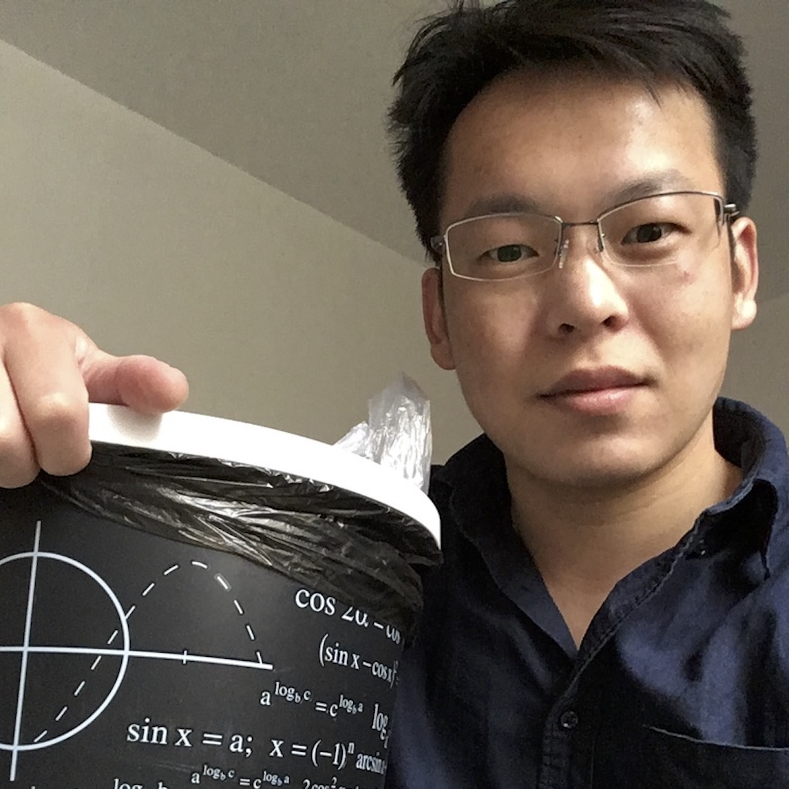
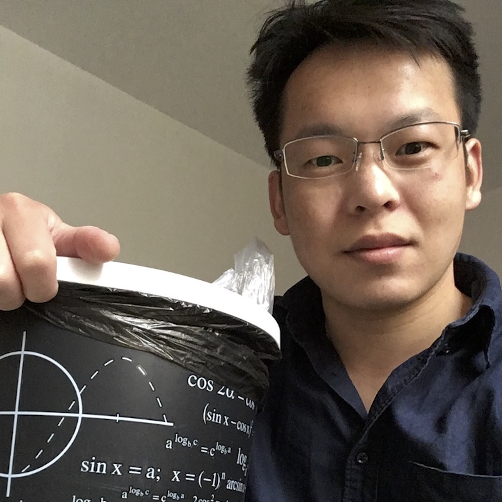

This is my personal website, and the following are some of my favoriate pictures. Obviously, not all of them are my photo.
 


I got my PhD in 2022 from University of Warsaw under the supervision of Piotr Sułkowski, and now I am a postdoc in Fudan university in the group of Satoshi Nawata.
My email is mirror2718@gmail.com
For seeing my publications, please visit inspirehep through the link.
Recently, I am mainly focusing on physical and geometric aspects of 3d N=2 susy gauge theories.
I wrote a Notebook for refined topological vertex, which is accessible at here.